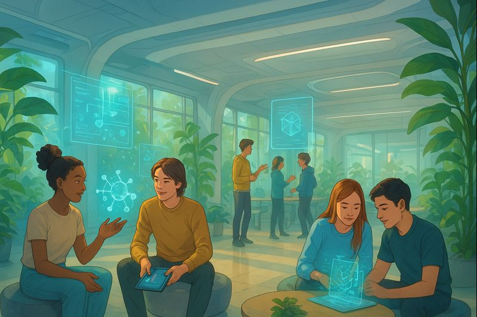

Reggel a jövő iskolájába nem csengőre, hanem egy megadott időpontra, értesítésre érkezem. Az iskola kapuja felismer arcfelismeréssel, és automatikusan kinyílik. Nincs táska a hátamon, mert minden tananyag a felhőben van.
Az első „órám” valójában egy tanulási blokk. Nem ülünk padokban, hanem különböző tanulóterekben: van, aki lebegő fotelben, mások állva vagy akár sétálva tanulnak. A mai első témám a Mars kutatása, amit egy virtuális valóság szemüvegen keresztül fedezek fel – szó szerint „ott vagyok” a bolygón.
Igazából nincsenek hagyományos órák. Nincs fix csengetés és tantárgyak sem úgy, mint most. Mindenkinek személyre szabott tanulási terve van, és mesterséges intelligencia segít abban, hogy mikor mit tanuljon. A tanárok inkább mentorok: kérdeznek, segítenek gondolkodni, és együtt oldanak meg problémákat velünk.
Tanulni főleg projektekben tanulok. Például egy csapatban dolgozunk azon, hogyan lehetne egy várost fenntarthatóbbá tenni. Közben rengeteg tantárgyat használunk, csak nem külön-külön, hanem együtt is.
Szünetben nem csak a folyosón ácsorgunk. Van egy zöld kert a tetőn, ahol pihenni lehet, beszélgetni, vagy akár zenélni. Aki akar, elmehet egy csendes kapszulába pihenni, mások játékos mozgásprogramokon vesznek részt. Ez az iskola teljesen más, mint a mostani. Kevesebb a magolás, nincs stresszes felelés, és nem mindenki ugyanazt tanulja egyszerre. Itt a kíváncsiság a legfontosabb, és az, hogy megtanuljunk gondolkodni, együttműködni és alkalmazkodni a jövőhöz.
Készítette: Udud Mátyás